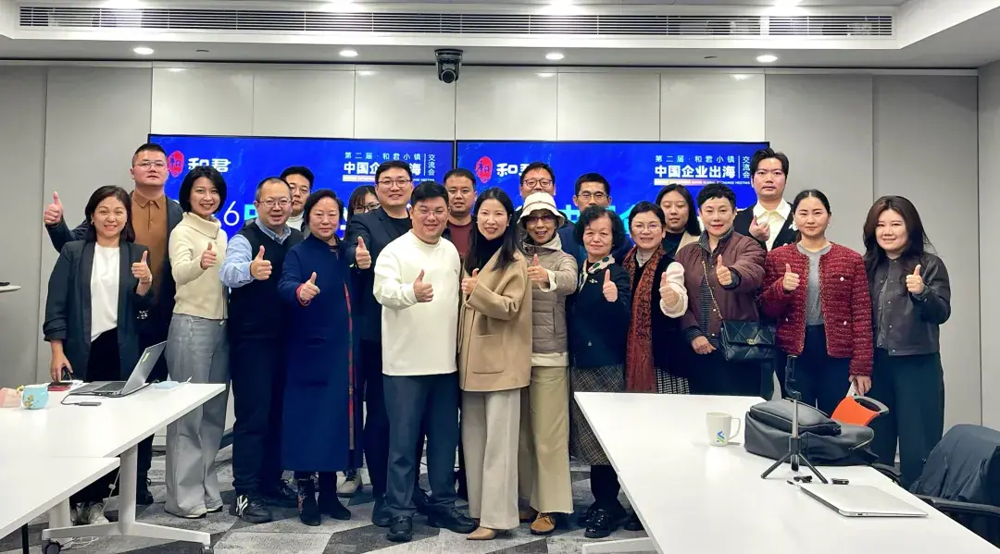
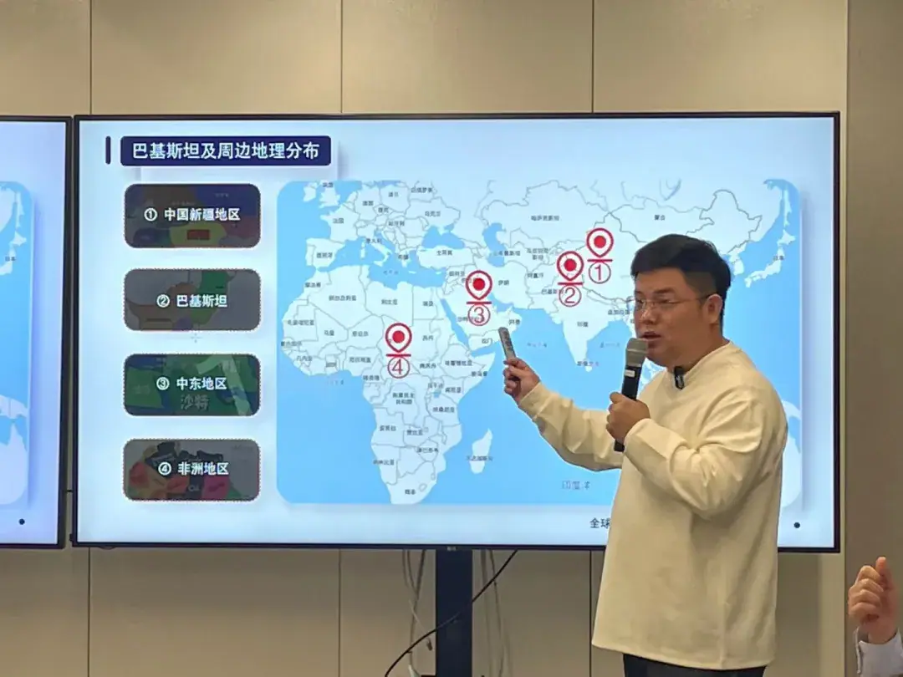
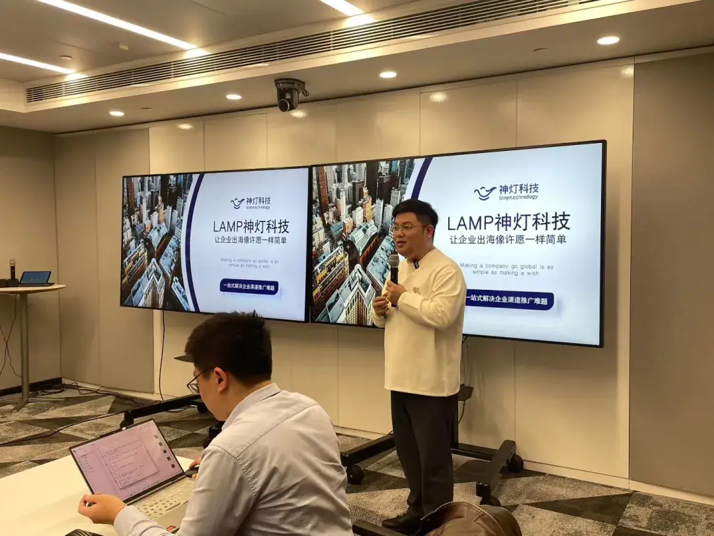
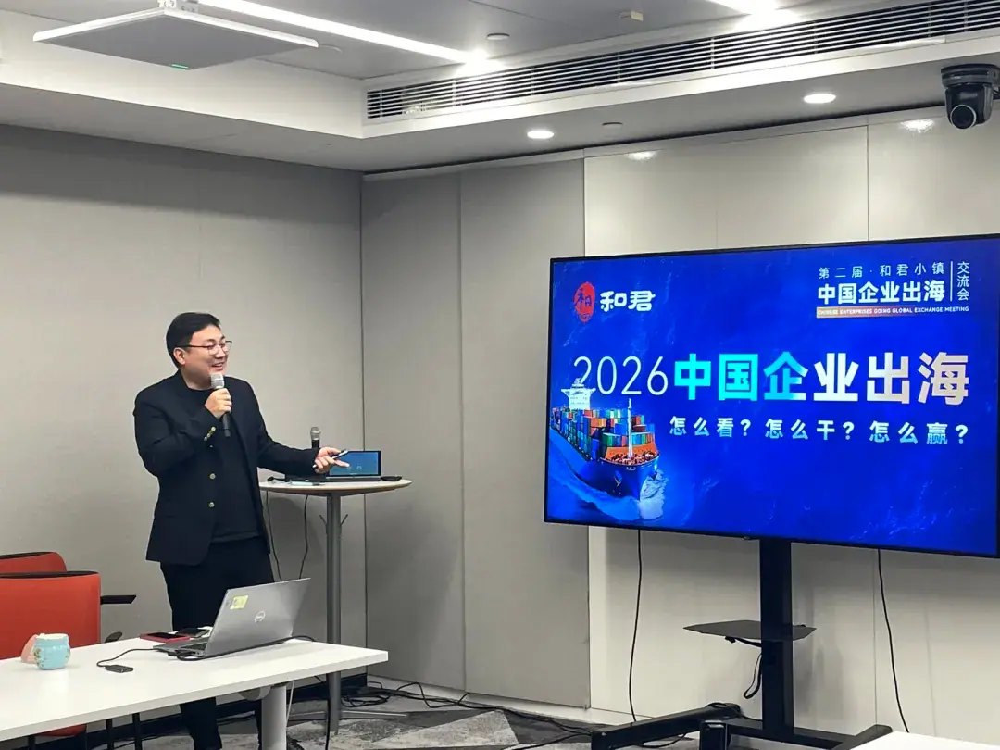

SALON-04
出海沙龙 · OUTBOUND SALON
中国企业去巴基斯坦怎么落地？南亚市场的机会、门槛与合规要点
Pakistan Salon: opportunities, thresholds and compliance essentials for Chinese companies entering South Asia.
2025年12月，海鑫汇出海沙龙巴基斯坦专场在北京圆满收官。围绕“中国企业去巴基斯坦怎么落地”这一主题，多位专家从跨境金融、属地化落地与战略路径三个维度展开分享，系统梳理了南亚市场的机会、门槛与合规要点。

分享一：外资银行一站式跨境金融解决方案
针对中国企业进入巴基斯坦及南亚市场普遍关注的资金通道问题，专家介绍了外资银行的一站式跨境金融解决方案，涵盖账户开立、跨境结算、贸易融资与汇率风险管理等环节，帮助出海企业更平稳地完成资金安排与交易闭环。

分享二：从落地到市场到组织，巴基斯坦实战经验分享
结合在巴基斯坦的实际经营案例，专家从属地落地、市场开拓与组织搭建三个层面复盘实战经验：包括当地政策与市场进入路径、渠道与客户关系建立，以及本地化团队的组织设计与人才配置，为计划进入南亚市场的企业提供了可参照的落地清单。

分享三：告别草莽出海，从“机会驱动”到“战略驱动”
在机会型出海的红利逐渐消退的背景下，专家提出企业需要完成从“机会驱动”到“战略驱动”的转变，把出海作为第二增长曲线进行系统性规划——包括市场选择、合规建设、组织能力与长期资源配置，而非单点机会的短期博弈。

海鑫汇视角
巴基斯坦是中巴经济走廊的战略支点，也是中国企业在南亚市场的重要切入点。海鑫汇巴基斯坦运营中心依托属地资源，为出海企业提供落地支持、政府关系协调与资源整合服务，协助企业对接南亚市场的政策窗口与商业需求。
原文链接
本活动由 与君出海 公众号报道（关联 海鑫汇GTN），点击查阅完整原文： 查看原文 →
本文为海鑫汇对公开活动报道的整理，原始报道见 与君出海 公众号。 查看原文 →
想把“出海”从口号变成可执行的路径？先做一次免费首诊判断。
预约免费首诊 →